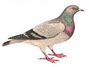
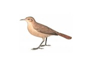
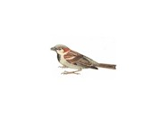

Guía de aves, clasificadas por su tamaño
Original de la Facultad de Veterinaria (UBA) - Editada para simplificar
|  |  |  |
| Tamaño
aproximado al de una paloma: Cotorra Pirincho Carpintero Picazuro Paloma |
Tamaño
aproximado al de un hornero: Boyerito Renegrido Tordo Benteveo Picabuey Músico Hornero Zorzal colorado Torcaza Torcacita Zorzal blanco Calandria |
Tamaño
aproximado al de un gorrión: Picaflor Bronceado Golondrina Ceja Blanca Golondrina Doméstica Colibrí Chingolo Ratona Piojito Cabecita Negra Jilguero Torcacita Gorrión |